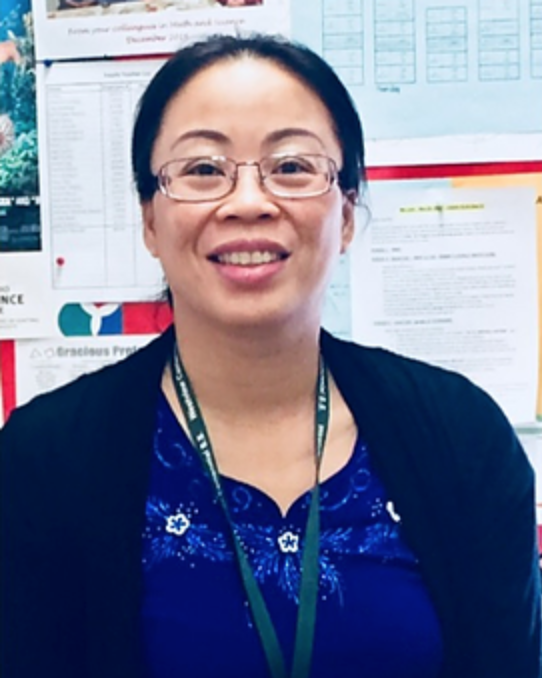

Meet the team
Megan Maclean
Program Manager and Guidance
Megan Maclean is an Ontario Certified Teacher and member of the Ontario School Counselor Association. As a Guidance Counselor with our program, she brings a variety of experience from her teaching, special education, and social service background. Being the first in her family to graduate university, Megan’s motto in life is Dream it. Do it. Achieve it. Her approach with students follows the same set of values as she focuses on goals first, and what it takes to bring her students to the next level. Her goal for every student is to develop the self awareness and resiliency to overcome barriers and achieve their fullest potential.
Trang Nguyen
Math & Science Teacher
Trang Nguyen is an experienced Math and Science teacher with a Bachelor of Education in Intermediate and Senior Division and an Honours Specialist in Mathematics. For 6 years, she has been working for TDSB board and has taught all ages and levels in Mathematics. With her passion in teaching, commitment to lifelong learning and instructional abilities, she has been a great addition to the Foundation Program. She believes that all students can learn and succeed. Her major goals in teaching are to help students achieve their goals and maintain a positive learning environment. She is devoted to her students and continues to help them strive to achieve their best.
“The best teachers teach from the heart, not from the book” ~ Unknown
Kosal Chhin
Math Teacher
I use my experiences in teaching and customer service to connect, teach, and serve our students in their journey of
conquering the fundamental skills needed in math. At the same time, I love giving our students challenges that require
thinking outside the box, some of which result in twisted endings. Occasionally, we have unconventional talks about some
of the masterpieces in mathematics. Similar to the Mona Lisa masterpiece in art, math has its share of masterpieces too.
Consider this, if you were taking an “art class” in which you were only taught how to paint blue skies, but never shown
the masterpieces from Leonardo Da Vinci or Vincent van Gogh, would you appreciate art and want to learn more about it? I
doubt it. This same idea applies to mathematics. Therefore, it is my goal to encourage our kids to appreciate the
subject they are learning because only then will they be excited to learn, hence, in the long run, it becomes easier to
build those foundational skills for our students. I am inspired to work with our students because THEY inspired me: THEY
commit their times and efforts to come into our classroom instead of “chillin” after school, and that speaks volume.
Errol Gaskin
English Teacher
Errol Gaskin believes that words, whether written, spoken, heard or read, when arranged and delivered in certain ways,
can have tremendous power. Words can help or hinder, heal or hurt; they can inform, inspire, entertain; create joy or
cause pain. It is through the spoken or written word that religions have been forged, our greatest ideas communicated.
Inspiring young people to appreciate the beauty and effective use of language has been at the heart of my efforts as a teacher. I have done this at Westview Centennial Secondary School for sixteen years. The Foundation after school program provides young people with an opportunity for empowerment through education. As a member of the teaching staff, I am honoured to be able to encourage youths in this direction.
Inspiring young people to appreciate the beauty and effective use of language has been at the heart of my efforts as a teacher. I have done this at Westview Centennial Secondary School for sixteen years. The Foundation after school program provides young people with an opportunity for empowerment through education. As a member of the teaching staff, I am honoured to be able to encourage youths in this direction.
Xuan Le
Math Teacher
I use my experiences in teaching and customer service to connect, teach, and serve our students in their journey of conquering the fundamental skills needed in math. At the same time, I love giving our students challenges that require thinking outside the box, some of which result in twisted endings. Occasionally, we have unconventional talks about some of the masterpieces in mathematics. Similar to the Mona Lisa masterpiece in art, math has its share of masterpieces too. Consider this, if you were taking an “art class” in which you were only taught how to paint blue skies, but never shown the masterpieces from Leonardo Da Vinci or Vincent van Gogh, would you appreciate art and want to learn more about it? I doubt it. This same idea applies to mathematics. Therefore, it is my goal to encourage our kids to appreciate the subject they are learning because only then will they be excited to learn, hence, in the long run, it becomes easier to build those foundational skills for our students. I am inspired to work with our students because THEY inspired me: THEY commit their times and efforts to come into our classroom instead of “chillin” after school, and that speaks volume.
Suman Verma
Math & Science Teacher
Suman Verma is a Math and Science teacher with 8 years teaching experience in Ontario. I am B.Sc.; M.Sc.; and honour
specialist in Math. My Education degree (B.Ed) is from Lakehead University.
I believe in life long learning and as a teacher I have the ability to help others learn. Education is the key to success in life and we as teachers make a big impact in the lives of our students.
I believe in life long learning and as a teacher I have the ability to help others learn. Education is the key to success in life and we as teachers make a big impact in the lives of our students.

Anh Lam
Math Teacher
Anh Lam is the Math Curriculum Leader, who teaches from her heart, at a local urban school within the Jane and Finch
catchment, and an engaged member of the Math team at the FFSA. She is dedicated to helping her students succeed in Math
and life. She can always be found surrounded by groups of students, teaching and supporting their journey to academic
excellence. She is a caring teacher and mentor to numerous youths who works continuously to encourage team and peer
teaching.
Anh has an unrelenting belief that every student can succeed if given opportunities and un-biased supports. She believes that it takes a concentrated focused effort from all involved to help guarantee success for students from inner city communities.
Anh has an unrelenting belief that every student can succeed if given opportunities and un-biased supports. She believes that it takes a concentrated focused effort from all involved to help guarantee success for students from inner city communities.
Myra Shivanandan
English Teacher
Myra Shivanandan is an English and History Secondary School teacher, graduating from the Urban Schools Cohort as part of the Ontario Institute for Studies in Education. She has a wide array of teaching experiences, including working as a teacher in adult detention centres, alternative schools, Toronto Community Housing complexes, and traditional classrooms. Myra teaches from a social justice perspective, and believes that all students regardless of race, socio-economic background, age, gender, ability, or sexual orientation deserve an education.
Sherrese Carby
English Teacher
Sherrese Carby is an Ontario Certified Teacher, Deans medal recipient Child and Youth Worker graduate, an Author,
Motivational Speaker, a Television Personality, Community producer and a Host. It is with commitment, diligence,
determination, authenticity and passion that she carries out all she pursues. Sherrese believes all have capacity and
she is determined to mobilize the capacity of as many as she can. While at the Foundation, Sherrese develops
individualized student specific programming that allows participants to develop academically, socially, emotionally, and
in the area of confidence and self esteem. Sherrese is focused on the participants whole self. She consistently shares,
she truly enjoys what she does and works to assist all participants best self to shine brightly!